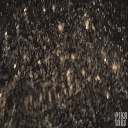
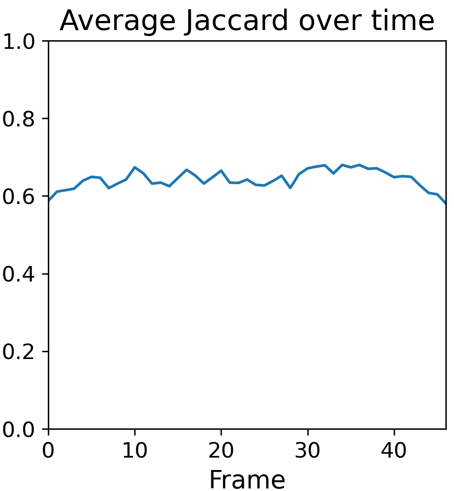
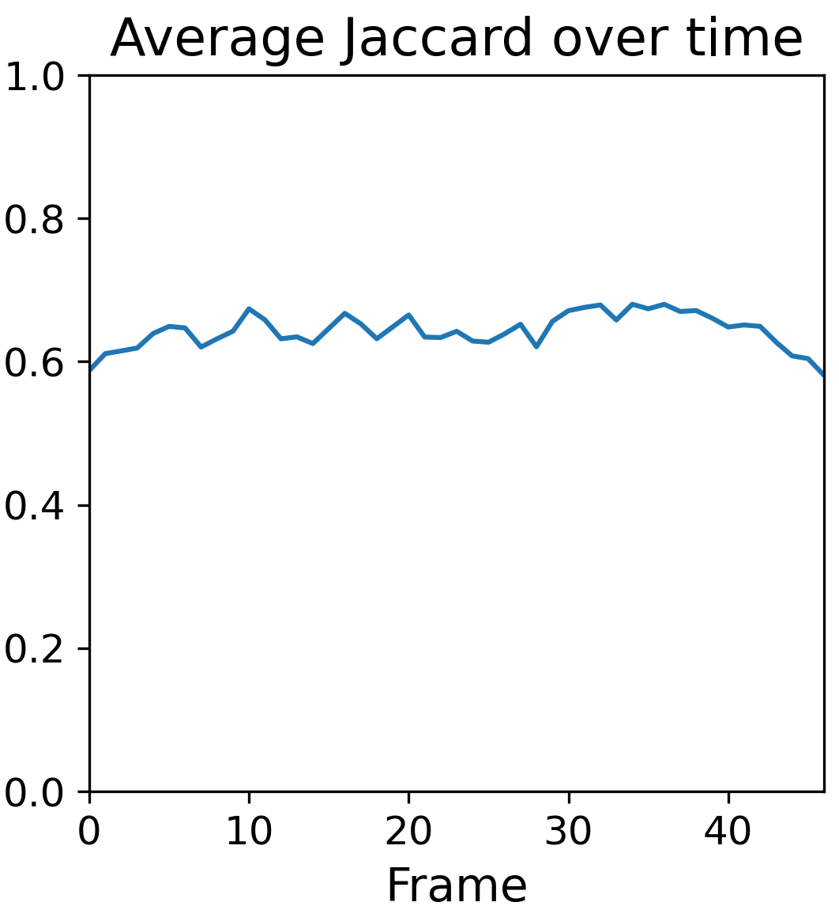

TRAJAN captures human evaluations of temporal consistency and realism in generated videos
Example videos from the EvalCrafter [3] and VideoPhy [4] datasets covering 15 different generative video models. TRAJAN captures human judgements of motion consistency, appearance consistency, overall realism, and object interaction realism for 100 videos sampled from each of these 15 models better than all alternatives.


 
